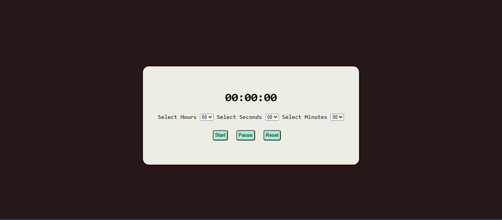

The Overview
Tic-Tac-Toe looks like the simplest game you can build — a 3x3 grid, two players, three in a row wins. But underneath that simplicity sits one of the cleanest problems for practicing real software architecture: how do you keep game rules, application state, and what's on screen from turning into a tangled mess the moment you add features like multi-round play, a scoreboard, or persistence?
For this project, I built a multi-round Tic-Tac-Toe game using vanilla JavaScript, HTML, and CSS — no frameworks — specifically to practice the architectural thinking that frameworks like React later abstract away. Rather than treating this as a one-off "make it work" exercise, I used it to enforce a strict separation between three layers: state (the single source of truth for whose turn it is, the board, and scores), rules (pure functions that decide what happens next — checking wins, draws, and valid moves — without ever touching the DOM), and rendering (functions whose only job is to mirror whatever the current state is onto the screen). That separation became the backbone of the entire build, and it's the lesson I kept coming back to every time something broke.

Existing dashboard with heuristic violations annotated during the audit phase.
Design strategy
Based on my planning.
Process
Week 1 — Architecture & Planning
I started by deciding how state, rules, and rendering would be split before writing any game logic. The rule was simple: rules are pure functions that never touch the DOM, rendering functions only read state and paint it to the screen, and the UI is never allowed to be a source of truth — it's a mirror of state, never the other way around. This single principle shaped every decision that followed and is the architectural insight I'd point to as the biggest takeaway from the whole project.
Week 2 — Core Game Logic & Player Data
With the architecture decided, I built the player data structure — an array of objects, each carrying name, symbol, score, and turn state — and used it to drive a live turn indicator that updates as players alternate. I implemented the win/draw-checking logic as pure functions operating only on the board state, then wired up a dynamic Reset/New Game button that changes behavior depending on whether a round or the whole match is ending.
Week 3 — Scoreboard, Persistence & a Real Debugging Lesson
Next came the scoreboard, tracking wins across rounds per player, and localStorage integration so scores would persist between rounds within a session. This phase surfaced the most valuable bug of the project: a variable (countForClick) tracking clicks and turn state was scoped inside a function, which meant it silently failed to reset properly between rounds. Moving that state to the correct outer scope fixed it — a small change, but it taught me more about closures and variable lifetime than any tutorial had. It also reinforced why keeping state centralized (per the Phase 1 architecture) makes bugs like this easier to isolate and fix.
Week4- Testing & Sharing the Build
Testing surfaced one open gap: localStorage writes scores correctly on every win or draw, but the score isn't read back in on a full page reload — so a hard refresh currently resets the board to zero even though the write-side of persistence works. I've flagged this as the clear next step rather than treating it as a blocker. Once the core game was stable, I shared the project on LinkedIn, deliberately framing the post around the architectural decisions — the state/rules/rendering split, the scoping bug, the data structure choice — rather than just announcing "I built a game."

Final hi-fi screens showing the redesigned sidebar, dashboard home, and notification workflow builder.

Before — 14-item sidebar, no clear entry point

After — 6-item sidebar, goal-first onboarding checklist
Results
Building this project turned a "simple" game into a concentrated lesson in software architecture fundamentals.
Learning Outcomes
This project reinforced that even a "simple" game is a serious testing ground for architectural discipline — and that the constraints I set for myself mattered more than the game mechanics themselves.